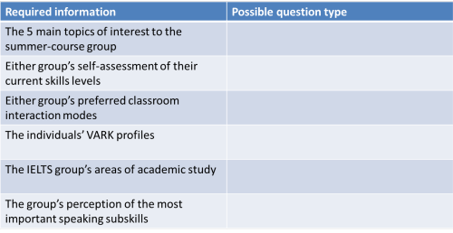
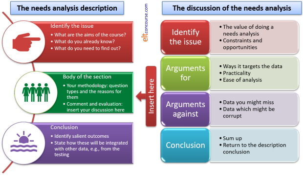

Delta Module Three ELT specialism: needs analysis
 |
Much will depend on the focus of your Module Three report, of course, so the following can only be generic in nature. The following is premised on the understanding that you have followed
the guide to constructing
a needs analysis on this site. If you haven't yet done that,
you should do it now and then return to this page when you have
completed it. If you want to refer to it as we go along,
click here
to open it in a new tab so you can swap between the two or
display them together. Most Module Three reports are focused on a group of some sort but if you have selected a One-to-One course what follows will be relevant and probably simpler to conduct. The suggested word count for this section is 900 words give or take 10%. |
 |
What do you know and what do you need to know? |
There is a wide range of things that you might want to know, of
course, and a list was provided on the general guide to this area.
Now you need to select from that list those areas which are important
to your learner(s).
Here are two examples:
Example 1
You are focused on an examination group preparing for the IELTS Academic Format and intending to go on to study at an institute of Higher Education in the UK (a popular choice).
The first thing to note is that learners will have a common set of needs arising from the nature of the examination. The IELTS website describes the function of the examination as
The Academic format is, broadly speaking, for
those who want to study or train in an English-speaking university or
Institutions of Higher and Further Education. Admission to
undergraduate and postgraduate courses is based on the results of the
Academic test.
(https://www.ielts.org/test_takers_information/what_is_ielts/academic_or_general_training.aspx.
This site also gives you extensive information concerning the nature of
the test items and the marking scheme, of course.)
We can already make a few judgements concerning the learners' needs because we know two crucial things already. What are they? Click here when you have an answer to that.
We know:
- The range of skills that the students will need to deploy to get the score they need in the examination
- We also know that, thereafter, the learners will need to deploy the language in an English-speaking environment generally and an academic one in particular
This is not the place to plan an IELTS / EAP course for you so there
won't be a list here of the areas you need to investigate further.
However, the general point here is that before you conduct a needs
analysis you already know what to look for because the aims of the
course have been clearly set out. In this example, the aims are:
- To prepare the learners for the demands of the IELTS examination
- To prepare the learners to function successfully in an English-medium academic setting and in an English-speaking environment generally
Example 2
You are focused on a mono-lingual (German) General English summer course for teenagers (15-17 years old). They are coming to the UK for a 2-week, 30-hour language course mixed with some social activities and an excursion programme. They will stay in a university residence block.
Again, we have three crucial bits of information before we start. What are they? Click here when you have an answer.
- We know the ages of the students and can make some kind of estimation of their needs in terms of activity types and topic focuses
- We know their first language and that will prepare us for many lexical and structural issues that we need to address on a course
- We know where, at least in the short-term, the learners will have to deploy English (which won't be with host families)
However, there's a lot we still don't know and will need to find out before the course can be planned. Make a list of the things you would want to know and then click here to see if you coincide. Obviously, there's no 'right' answer but, equally obviously, there are certain things which should be on the list.
- skills: are the learners going to need to take any kind of examination or are they only focused on improving certain skills? If so, what are they and are there any identifiable subskills needs?
- accuracy levels: is it important that the learners focus on producing accurate language or is basic communicative competence the aim?
- lexis and structure: often, these kinds of students are grammar-rich but lexis-poor. Is this the case here?
- functions: are there specific functions (such as asking for permission, inviting, offering, declining etc.) which the learners will need and/or can't yet handle?
- learning styles: are there particularly common learning styles in the group? What kinds of activities will they respond well to?
- interests: are there any topics of common interest to most of the group? Will the excursions have a bearing?
- level: what is the learners' current level? Is it a reasonably homogenous group?
Your list and this one should coincide in many cases but we will all have a slightly different response.
Task: Now do the same thing for your chosen focus group or learner.
The moral of all this is to make sure that the aims of the course (its learning outcomes) should be explicit before you conduct a needs analysis in any depth. That way, you are armed with a short-list of things you need to know and can get on with planning how to find them out.
Finding out |
In what follows, the assumption is that you are not in daily contact with the learners and do not have the opportunity to interview them face to face. The needs analysis will, perforce, be carried out on paper or online.
At this point, you need to refresh your memory concerning the various
ways to ask questions that were covered in the general guide to
constructing a needs analysis.
There is a guide, almost a mini-course, on this site to
doing classroom research (new tab). It will help you formulate
questions and see how to do research that provides usable and objective
data. You are advised to follow that guide.
The trick, if there is one, is to make the question type match the kind
of information you are after. The following uses the two examples
above of group types.
See if you can fill in the
right-hand side of this table and then click on it to compare the
response with your notes.

Once you have constructed the questionnaire and have got someone else
to proofread it for accuracy and lack of ambiguity, you can administer
it and analyse the results mathematically.
For Module Three, you will need to draw out the most important results
which impinge on course planning, prioritise them and then integrate
them into your description of the course, justifying as you go along.
For an example of a basic needs analysis form in PDF format, click here. Clearly, what you use will have to more sophisticated and better targeted than this little example but the principles are the same.
 |
Include diagnostic testing |
Part of the Needs Analysis will involve some form of diagnostic
testing and you need to refer to
the guide to
that area (new tab).
The description and rationale for your diagnostic
test needs to be included in this section, along with the outcomes of
any questionnaires and so on that you have conducted.
The test itself is in the appendix, of course.
If you would like to test yourself very briefly concerning the applicability of some diagnostic testing approaches, click here.
 |
Do not do this! |
The Needs analysis comes first. You cannot design a decent
diagnostic test until you have a clear list of what the learners need
and why they need the skills or language systems you identify.
Trying to diagnose what you can't describe is not a sane approach to
course design.
 |
Writing all this up |
In the diagram below, the Conclusion section of the needs analysis
discussion includes Identify salient
outcomes. This means you must list and
prioritise the outcomes of the analysis. It also means
that you need to say what the criteria are that you used to prioritise
the needs.
It will help to write two lists:
- A list of the essentials along the lines of
This need is important because (insert the criteria you used to identify this fact) ... and is included in the (insert a clear reference to which part of the course design you are talking about) ... section of the Course Design (see page x). - A list of aims and needs that are less vital along the lines of
Although the need for (state the need you identify) ... is identifiable from the data, it is not included in the course because (insert criteria [lack of time, not important for the majority of participants, not feasible given the learners' level etc.]) so does not form part of the course targets although it is addressed in (state part of the course design where you address this need, if in fact, you do).
Here's a coherent way of structuring this part of your assignment. Note the need to insert a discussion section into the heart of the description and how that is differently staged and structured.

 |
The appendices are extra |
These do not take the place of discussion in the main text.
You need to include:
- The questionnaires and any other documentation which informed the Needs Analysis
- The diagnostic tests you have conducted
- The results of both of the above (a table format is easiest) but the synthesis goes in the main text
You will need to design a diagnostic test of the
areas you have identified as being key to the success of the course to
establish the learners' current competence.
Go to the guide to testing,
assessment and evaluation to see how to do that. When you are
happy that you understand the material there, go on to
the guide to how to apply it to Module Three.
 |
Review what you have written |
This section of the assignment carries 20% of the marks available for the whole assignment so it's important to read through it again when you have finished (or think you have) and check how a reader will react to it. In particular, will a reader know:
- how and why you have targeted your needs analysis
- that you have conducted a diagnostic testing procedure after the needs analysis and designed the tests based on the results of it
- what your rationale for the design of the diagnostic tests was
- what you have prioritised and why
If the answer to any of these questions is No or Maybe, go back and re-write some of the section.
 |
Avoid the obvious errors |
Examiners' reports contain more or less the same catalogue of
weaknesses year after year so be careful to avoid any of the
following being levelled at this part of your assignment.
For this section, the most frequently cited problems are:
- a failure to adequately reference sources, use relevant
terminology and demonstrate a link between theory and practice
- Make sure you show that you understand the principles that underlie the instruments you are using
- focusing too much on the results of the needs analysis without
providing clear rationale for the selection of the diagnostic tests.
- Keep a balance and make sure you say why you have prioritised certain aspects to test
- failing to provide sufficient analysis of the skill against
clear and appropriate criteria
- If you are trying to diagnose learners' ability in a skills area (and you almost certainly will be), make sure that you are evaluating the learners' production against explicit criteria
- failing to keep the focus balanced by being too concerned with a
single skill
- Use the results of the needs analysis to justify all parts of the diagnostic test
- tending to list the priorities identified,
with limited discussion about how these were chosen
- Don't just list the priorities. Link each one to the findings of the needs analysis and the diagnostic test
- Do not expect the reader to recognise what the priorities are. List them and link them.
Test yourself on the contents of this guide.
| The Module Three ELT Specialism areas: | |||
| Choosing the topic | Writing the essay | The introduction | Needs analysis |
| Testing | Course proposal | Module 3 reading list | Before you submit |
Comments:
The lists won't coincide because some data can be gathered by alternative means. However: